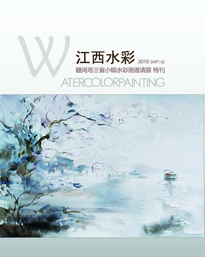
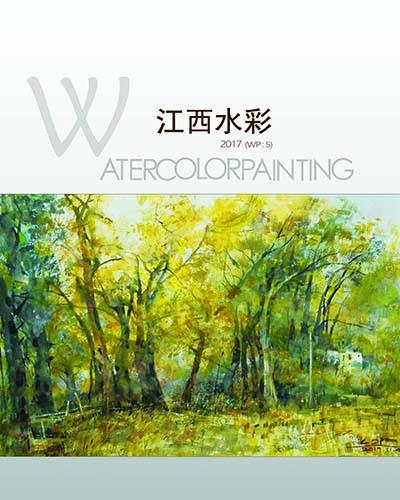
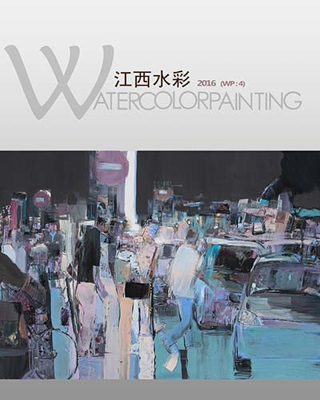
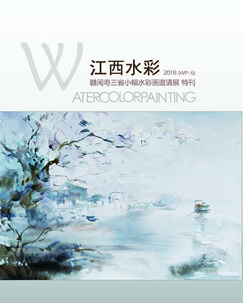
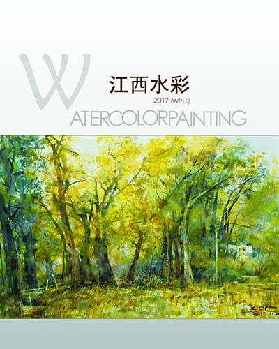
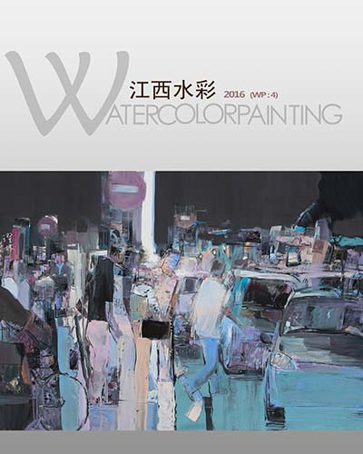
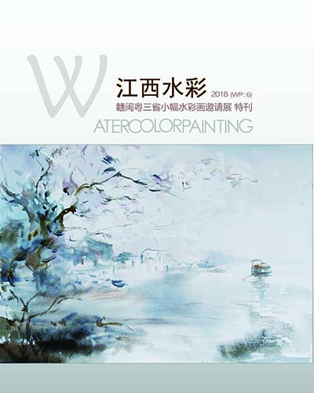
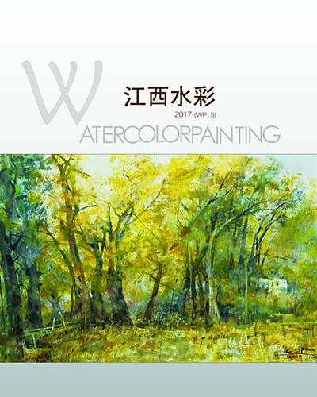
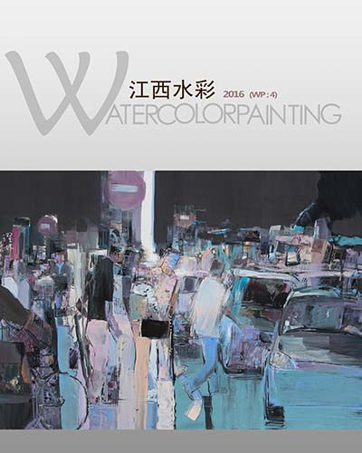

Jinchen Art
Real & Unreal
Jiangxi Watercolor
Decoration
Jiangxi Watercolor Painting
magazine shows the watercolor painting works and related stories of the famous fine artists of Jiangxi Province, P.R.China.
Producer
Watercolor & Gouache Committee, Fine Artist Association of Jiangxi Province, P.R.China.
Chief Editor
段 湧 (David Tuan)
WeChat
Please follow the account at WeChat Media Platform to get details.
写生中国水彩协会南昌分会作品
2025年5月
冬如玉·东方美术作品展
2024年1月
2023东方美术迎春作品展
2023年1月
这个夏天
2022年8月
看东方·5月
2022年5月
看东方·4月
2022年4月
我们在东方
2022年4月
东方美术作品展·身边的故事
2021年7月
北美新华传媒7月25日报道《江南西道·江西省水彩画名家作品展》在东南艺术馆隆重开幕
2019年7月
江南西道·江西水彩名家作品展艺术研讨会
2019年7月
《画与诗·心亦远方》Painting and Poetry - Heart Is Far Away
2019年6月
相约青岛~那片海
2018年8月
2015 江西省水彩画、粉画展巡礼（三）风景作品专辑
2016年2月
2015 江西省水彩画、粉画展巡礼（二）风景作品专辑
2016年2月
2015 江西省水彩画、粉画展巡礼（一）人物风情专辑
2016年1月
《透明氤氲·空灵虚远》李卫平教授水彩画作品
2015年7月
《南山松茂》陈松茂教授的水彩人体作品
2015年7月
透明色彩的耕作者—杜玉华教授
2015年6月
把喜爱的画带回家
2015年5月
Early Magazines
You can read following free digital copies of yearbook. They are in portable document format (.pdf file).
Annal 2020
2019

Annal 2018

Annal 2017

Annal 2016
 Annal 2020
2019
Annal 2018
Annal 2017
Annal 2016
Annal 2020
2019
Annal 2018
Annal 2017
Annal 2016